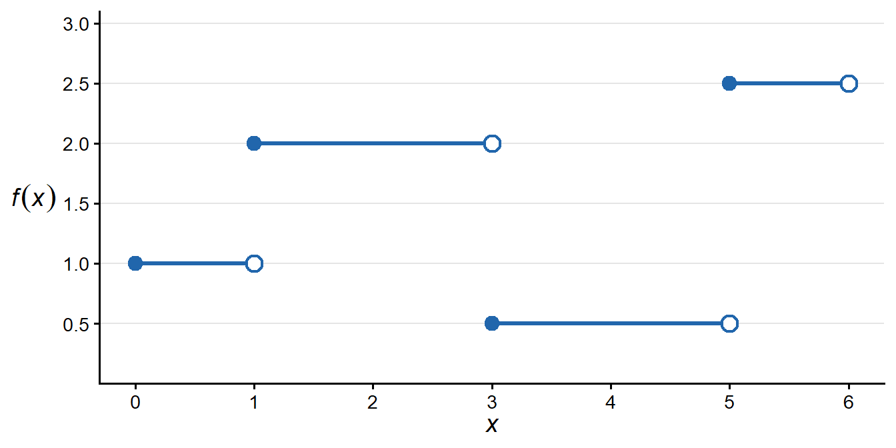
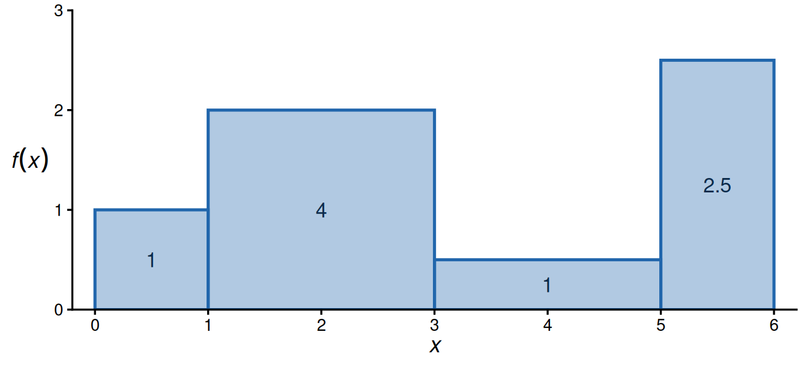
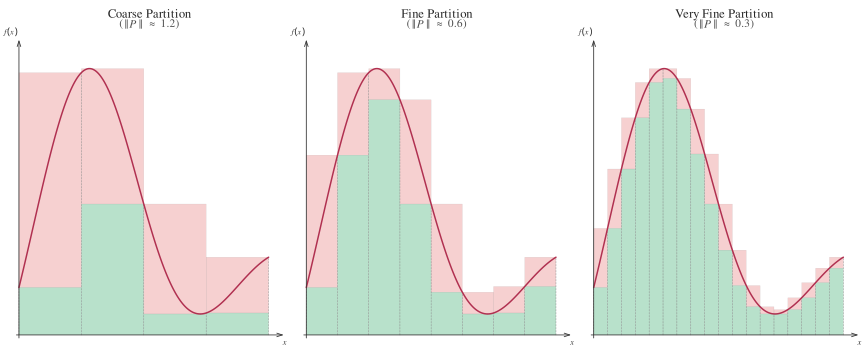
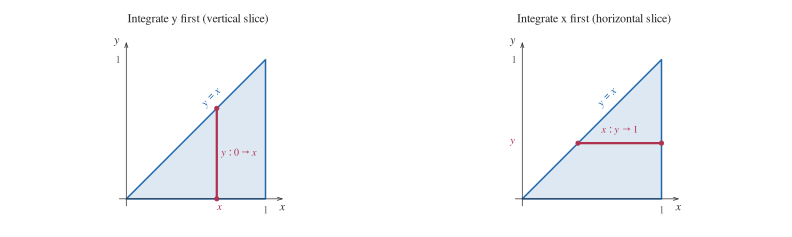
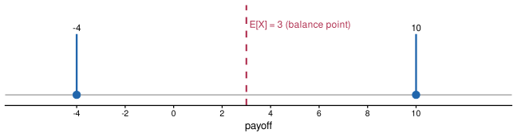
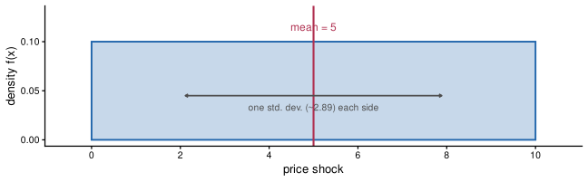

Session 3: Integration and probability
2026-08-27
Integration as answering two needs:
You will need to master integration in econometrics (e.g. calculating moments of a distribution), microeconomics (e.g. auctions), or macroeconomics (e.g. continuous-time models).
Objective for today: equip you with core techniques for working with integrals, so you can manipulate them confidently.
A word of caution:
This course will not cover measure theory, the rigorous foundation of (Lebesgue) integration. You don’t need it for the Master, but it’s good to know if you want to pursue research in theoretical micro, macro, or econometrics.
For more, see: Part I of Royden, Real Analysis (2023) or Billingsley, Probability and Measure (1995).
Prerequisite
We assume you already know the standard antiderivatives from the previous sessions (\(x^n\), \(e^x\), \(\ln x\), \(1/x\), \(\sin\), \(\cos\)). Today is about manipulating integrals, not memorising a table.
This is the most basic building block of integrals. We will see in the following slides how and why. Do you know what piecewise constant functions are? And any intuition why they are a building block to integration?
Definition
A function \(f:[a,b]\to\mathbb{R}\) is called piecewise constant (or a step function) if there exists a partition \[a = x_0 < x_1 < \cdots < x_n = b\] such that \(f\) is constant on each subinterval \([x_{i-1},x_i)\). Equivalently, \[f(x) = c_i,\quad x\in [x_{i-1},x_i),\quad i = 1,\dots,n,\] for some constants \(c_1,\dots,c_n\).
On \([0,6]\): \[f(x)= \begin{cases} 1, & 0\le x<1,\\ 2, & 1\le x<3,\\ 0.5, & 3\le x<5,\\ 2.5, & 5\le x<6. \end{cases}\]
Each horizontal segment represents a constant value \(c_i\) on the subinterval \([x_{i-1}, x_i)\). The function “jumps” at each partition point.

Area
If \(f\) is piecewise constant on \([a,b]\) with partition \[a = x_0 < x_1 < \cdots < x_n = b, \qquad f(x)=c_i\text{ for }x\in[x_{i-1},x_i),\] then \[\int_a^b f(x)\,dx \;=\; \sum_{i=1}^n c_i\,(x_i - x_{i-1}).\]
Why does this make sense?
Each term \(c_i\,(x_i - x_{i-1})\) is the area of a rectangle with height \(c_i\) and width \((x_i - x_{i-1})\).
For the step function above on \([a,b]=[0,6]\): \[\int_{0}^{6} f(x)\,dx = 1\cdot(1-0) + 2\cdot(3-1) + 0.5\cdot(5-3) + 2.5\cdot(6-5) = 1 + 4 + 1 + 2.5 = 8.5.\]
Each blue rectangle is one term \(c_i \cdot (x_i - x_{i-1})\); the integral is their total area.

Suppose a good is sold in discrete units (e.g. pancakes). Willingness-to-pay for the 1st, 2nd, 3rd, 4th units are respectively $20, $15, $10, $5. The market price is $8. Willingness-to-pay is a step function of quantity \(q\):
\[P(q)= \begin{cases} 20, & 0\le q<1,\\ 15, & 1\le q<2,\\ 10, & 2\le q<3,\\ 5, & 3\le q<4. \end{cases}\]
What is the total value consumers get above what they pay?
Consumer surplus
Only units 1–3 are bought (willingness-to-pay \(\ge\) price). Consumer surplus is the area between \(P(q)\) and the price line \(8\): \[CS = \sum_{i=1}^{3}\bigl(c_i - 8\bigr)\cdot 1 = (20-8)+(15-8)+(10-8) = 12+7+2 = 21.\]
This is exactly the (Riemann-)sum construction from two slides ago.
General Form
\[\int_{a}^{b} f(x)\,\mathrm{d}x\]
Definition
Let \(f:[a,b]\to\mathbb{R}\) be bounded. A partition \(P\) of \([a,b]\) is \(P: a = x_0 < x_1 < \cdots < x_n = b\), \(\Delta x_i = x_i - x_{i-1}\). Choose any sample point \(x_i^*\in(x_{i-1},x_i)\). The Riemann sum is \[S(f,P) \;=\; \sum_{i=1}^n f(x_i^*)\,\Delta x_i.\] If the limit \[\lim_{\|P\|\to 0} S(f,P)\] exists (independent of whether we approach the function “by below” or “by above”), then \(f\) is Riemann integrable and \[\int_a^b f(x)\,dx \;=\; \lim_{\|P\|\to 0} S(f,P).\]
In practice, Riemann sums answer the question “what would happen if we sum over smaller and smaller intervals”. Each term \(f(x_i^*)\,\Delta x_i\) is exactly a rectangle — the step-function picture from before.
Where you’ll see this again
The idea of a surplus (e.g. consumer surplus) is the workhorse welfare measure in microeconomics: taxation, trade policy, market power, and cost-benefit analysis are all evaluated by comparing areas like this one under different scenarios.
Theorem
If \(f:[a,b]\to\mathbb{R}\) is continuous on the closed interval \([a,b]\), then \(f\) is Riemann integrable on \([a,b]\).
An intuition?

As \(\|P\| \to 0\), the pink (upper) and green (lower) sums converge, demonstrating \(U(f,P) - L(f,P) \to 0\) and hence Riemann integrability.
Improper Integral
For a continuous \(f\colon[a,\infty)\to\mathbb{R}\), define \[\int_a^\infty f(x)\,\mathrm{d}x = \lim_{b\to\infty}\int_a^b f(x)\,\mathrm{d}x.\] Even if each \(\int_a^b f\) exists, the limit may or may not converge.
Diverges: \(f(x)=\tfrac1x\) on \([1,\infty)\). \[\int_1^n \frac{1}{x}\,\mathrm{d}x = \ln(n)\;\xrightarrow{n\to\infty}\;\infty.\]
Converges: \(f(x)=e^{-rx}\) on \([0,\infty)\), \(r>0\). \[\int_0^n e^{-rx}\,\mathrm{d}x = \tfrac1r\bigl(1 - e^{-rn}\bigr) \;\xrightarrow{n\to\infty}\; \tfrac1r.\]
The lesson
Both integrands go to \(0\). But what matters is how fast \(f\to 0\). This is not a technicality: the convergent case (\(e^{-{rx}}\)) is exactly the discounting we use in continuous-time models.
Proposition
Let \(f,g:[a,b]\to\mathbb{R}\) be Riemann-integrable on \([a,b]\), and let \(c\in\mathbb{R}\). Then each of the following functions is also Riemann-integrable on \([a,b]\):
Proposition
(linearity) For all \(\alpha,\beta\in\mathbb{R}\), \[\int_{a}^{b} (\alpha f+\beta g)(x)\,\mathrm{d}x = \alpha\int_{a}^{b} f(x)\,\mathrm{d}x + \beta\int_{a}^{b} g(x)\,\mathrm{d}x\]
(additivity) For any \(c\in[a,b]\), \[\int_{a}^{b} f(x)\,\mathrm{d}x = \int_{a}^{c} f(x)\,\mathrm{d}x + \int_{c}^{b} f(x)\,\mathrm{d}x\]
(monotonicity) If \(f\geq g\) on \([a,b]\), \[\int_{a}^{b} f(x)\,\mathrm{d}x \geq \int_{a}^{b} g(x)\,\mathrm{d}x, \quad\text{and}\quad \int_{a}^{b} |f(x)|\,\mathrm{d}x \geq \Bigl|\int_{a}^{b} f(x)\,\mathrm{d}x\Bigr|.\]
Proposition
Let \(f\) be an integrable function on \([a,b]\) (so \(|f|\) is integrable; beautiful proof in p.301 of Cummings (2021) ). Then \[\Bigl|\int_{a}^{b} f(x)\,\mathrm{d}x\Bigr| \le \int_{a}^{b} |f(x)|\,\mathrm{d}x.\]
Proof
Let \(I = \int_a^b f(x)\,\mathrm{d}x \in \mathbb{R}\). If \(I = 0\) the inequality is immediate, so assume \(I \neq 0\) and set \(\varepsilon = \operatorname{sgn}(I) \in \{-1,+1\}\), so that \(\varepsilon I = |I|\).
Because \(\varepsilon \in \{-1,+1\}\) and integration is linear,
\[|I| = \varepsilon I = \varepsilon\int_a^b f(x)\,\mathrm{d}x = \int_a^b \varepsilon f(x)\,\mathrm{d}x.\]
For every \(x \in [a,b]\) we have \(\varepsilon f(x) \le |\varepsilon f(x)| = |f(x)|\), so the monotonicity of the integral gives
\[|I| = \int_a^b \varepsilon f(x)\,\mathrm{d}x \le \int_a^b |f(x)|\,\mathrm{d}x.\]
Hence \(\displaystyle\Bigl|\int_a^b f(x)\,\mathrm{d}x\Bigr| \le \int_a^b |f(x)|\,\mathrm{d}x\). \(\square\)
A shorter proof (skipping more details)
Since for every \(x\in[a,b]\) we have \(-|f(x)| \le f(x)\le |f(x)|\), integrating yields \[-\int_a^b |f(x)|\,\mathrm{d}x \le \int_a^b f(x)\,\mathrm{d}x \le \int_a^b |f(x)|\,\mathrm{d}x.\] Taking absolute values gives the desired result. \(\square\)
Theorem (Cauchy–Schwarz)
Let \(f\) and \(g\) be integrable functions on \([a,b]\) such that \(f^2\) and \(g^2\) are also integrable. Then \[\biggl[\int_{a}^{b} f(x)g(x)\,\mathrm{d}x\biggr]^{2} \le \Bigl(\int_{a}^{b} f^2(x)\,\mathrm{d}x\Bigr)\, \Bigl(\int_{a}^{b} g^2(x)\,\mathrm{d}x\Bigr).\]
Proof
For any real \(t\), consider the nonnegative integral \[0 \le \int_a^b \bigl(t\,f(x) + g(x)\bigr)^2 \,\mathrm{d}x = t^2 \underbrace{\int_a^b f^2(x)\,\mathrm{d}x}_{A} + 2t \underbrace{\int_a^b f(x)g(x)\,\mathrm{d}x}_{B} + \underbrace{\int_a^b g^2(x)\,\mathrm{d}x}_{C}.\] If \(A=0\) the expression is affine in \(t\) and nonnegative for all \(t\), which forces \(B=0\) and the inequality holds trivially. If \(A>0\) this is a genuine quadratic in \(t\) that is nonnegative everywhere, so its discriminant is nonpositive: \[(2B)^2 - 4AC \le 0 \;\Longrightarrow\; B^2 \le AC,\] which is exactly the stated inequality. \(\square\)
Definition (Antiderivative)
Let \(f\colon[a,b]\to\mathbb R\). A function \(F\colon[a,b]\to\mathbb R\) is an antiderivative (also called a primitive) of \(f\) if it is differentiable and \[F'(x)=f(x)\quad\text{for all }x\in(a,b).\]
Theorem (Fundamental Theorem of Calculus, part I)
If \(F\in C^1\!\bigl([a,b]\bigr)\), then for every \(x\in[a,b]\), \[F(x)-F(a)=\int_{a}^{x}F'(t)\,dt.\]
A note on naming
Textbooks disagree on which half is “First” and which is “Second”. What matters is the pair: integrating a derivative recovers the function (this slide), and differentiating an integral recovers the integrand (next slide).
Theorem (Fundamental Theorem of Calculus, part II)
Let \(f\in C\!\bigl([a,b]\bigr)\) and define \[F(x)=\int_{a}^{x}f(t)\,dt,\qquad x\in[a,b].\] Then \(F\) is an antiderivative of \(f\), i.e. \(F'(x)=f(x)\) for all \(x\in(a,b)\).
Corollary
For any antiderivative \(G\) of \(f\) on \([a,b]\) and any \(x,y\in[a,b]\), \[\int_{x}^{y}f(t)\,dt = G(y) - G(x).\] Moreover, any two antiderivatives of \(f\) differ by a constant: \[F(x)-G(x)=\text{constant}.\]
Two objects you will constantly distinguish in macroeconomics:
Capital accumulation
Let \(I(t)\) be the rate of investment (a flow, e.g. $ per year) and \(K(t)\) the capital stock at time \(t\). Then \[K(t) = K(0) + \int_0^t I(s)\,ds.\]
What does the Fundamental Theorem of Calculus tell us here?
Differentiating both sides, the FTC (part II) gives back \[K'(t) = I(t).\]
Flows and stocks are literally derivative and antiderivative of one another. You will meet this distinction constantly: GDP (flow) vs. national wealth (stock); saving (flow) vs. accumulated debt (stock).
Quick check
Is unemployment a stock or a flow? What about the number of people losing their job this month?
Proposition
Let \(u\) and \(v\) be two \(C^1\) functions on an interval \([a,b]\). Then \[\int_{a}^{b}u(x)\,v'(x)\,dx \;=\; \bigl[u(x)v(x)\bigr]_{a}^{b} \;-\;\int_{a}^{b}u'(x)\,v(x)\,dx.\]
Recall the product rule \[(u\cdot v)'= u'\cdot v + u \cdot v'\] Integration by parts is just taking the integral on both sides (and rearranging) \[\int u\cdot v'=u\cdot v - \int u'\cdot v\]
Example 1: \(\displaystyle \int x e^x\,dx\)
Choose \[u = x,\quad dv = e^x\,dx \quad\Longrightarrow\quad du = dx,\quad v = e^x.\] Then \[\int x e^x\,dx = x e^x - \int 1\cdot e^x\,dx = x e^x - e^x + C = e^x\bigl(x-1\bigr) + C.\]
Example 2: \(\displaystyle \int \ln(x)\,dx\)
Write \(\int \ln(x)\,dx = \int 1\cdot \ln(x)\,dx\) and choose \[u = \ln(x),\quad dv = dx \quad\Longrightarrow\quad du = \frac1x\,dx,\quad v = x.\] Then \[\int \ln(x)\,dx = x\ln(x) - \int x\cdot\frac1x\,dx = x\ln(x) - \int 1\,dx = x\ln(x) - x + C.\]
Example 3: \(\displaystyle \int x^2 e^x\,dx\)
Choose \(u = x^2\), \(dv = e^x\,dx \Rightarrow du = 2x\,dx\), \(v = e^x\). Then \[\int x^2 e^x\,dx = x^2 e^x - \int 2x e^x\,dx.\] Apply integration by parts again to \(\displaystyle \int 2x e^x\,dx\): \[u = 2x,\quad dv = e^x\,dx \;\Longrightarrow\; du = 2\,dx,\quad v = e^x,\] \[\int 2x e^x\,dx = 2x e^x - \int 2 e^x\,dx = 2x e^x - 2e^x + C.\] Hence \[\int x^2 e^x\,dx = x^2 e^x - \bigl(2x e^x - 2e^x\bigr) + C = e^x\bigl(x^2 - 2x + 2\bigr) + C.\]
Proposition (Change of Variables)
Let \(\Phi\colon [a,b]\to\mathbb{R}\) be \(\mathcal{C}^1\), and let \(f\) be continuous on an interval containing \(\Phi([a,b])\). Then \[\int_{a}^{b} f\!\bigl(\Phi(x)\bigr)\,\Phi'(x)\,\mathrm{d}x \;=\; \int_{\Phi(a)}^{\Phi(b)} f(y)\,\mathrm{d}y.\]
Compute: \[\int_{a}^{b} 2x\,\cos(x^2)\,dx.\]
Substitution: \(\Phi(x)=x^2\), so \(d\Phi=2x\,dx\) and when \(x=a\), \(\Phi=a^2\); when \(x=b\), \(\Phi=b^2\).
Rewrite: \[\int_{a}^{b}2x\,\cos(x^2)\,dx = \int_{a^2}^{b^2}\cos(u)\,du.\]
Result: \[\bigl[\sin(u)\bigr]_{u=a^2}^{u=b^2} = \sin(b^2) - \sin(a^2).\]
Compute: \[\int_{a}^{b} \frac{x}{x^2+1}\,dx.\]
Substitution: \(\Phi(x)=x^2+1\), so \(d\Phi=2x\,dx\) and when \(x=a\), \(\Phi=a^2+1\); when \(x=b\), \(\Phi=b^2+1\).
Rewrite: \[\int_{a}^{b}\frac{x}{x^2+1}\,dx = \tfrac12\int_{a^2+1}^{b^2+1}\frac{1}{u}\,du.\]
Result: \[\tfrac12\bigl[\ln|u|\bigr]_{u=a^2+1}^{u=b^2+1} = \tfrac12\bigl(\ln(b^2+1) - \ln(a^2+1)\bigr).\]
For “nice enough” \(f(x,y)\), a double integral can be computed one variable at a time, in either order:
Fubini–Tonelli (informal version)
\[\iint_D f(x,y)\,dA = \int\!\Bigl(\int f(x,y)\,dy\Bigr)dx = \int\!\Bigl(\int f(x,y)\,dx\Bigr)dy.\]
Swapping the order is easy; the work is that the bounds change. Take the triangle \(D=\{(x,y): 0\le y\le x\le 1\}\):
Integrate \(y\) first (vertical slice): fix \(x\), let \(y\) run from \(0\) to \(x\), then sweep \(x\) from \(0\) to \(1\): \[\int_0^1\!\!\int_0^{x} f\,dy\,dx.\]
Integrate \(x\) first (horizontal slice): fix \(y\), let \(x\) run from \(y\) to \(1\), then sweep \(y\) from \(0\) to \(1\): \[\int_0^1\!\!\int_y^{1} f\,dx\,dy.\]

Both give the same number… but the inner and outer bounds are completely different. Sketching the region first is the habit to build.
Let \(X\) = hours you are willing to work (rescaled to \([0,1]\)), \(Y\) = hours worked (rescaled to \([0,1]\)), and suppose the pair \((X,Y)\) is uniformly distributed on the triangle \(D=\{(x,y): 0\le y\le x\le 1\}\) — i.e. hours worked never exceeds willingness to work.
Setting up the joint density
A valid density on \(D\): \(f(x,y) = 2\) for \((x,y)\in D\), \(0\) elsewhere, since \(\iint_D 2\,dA = 2\cdot\text{Area}(D) = 2\cdot\tfrac12 = 1\).
Using the vertical-slice bounds from the previous slide (Fubini/Tonelli lets us pick the easier order): \[\mathbb{E}[XY] = \iint_D xy\cdot 2\,dA = \int_0^1\!\Bigl(\int_0^{x} 2xy\,dy\Bigr)dx = \int_0^1 x\bigl[y^2\bigr]_0^{x}\,dx = \int_0^1 x^3\,dx = \frac14.\]
Sanity check via the other order
The horizontal-slice bounds give the same answer: \(\int_0^1\!\int_y^1 2xy\,dx\,dy = \int_0^1 y(1-y^2)\,dy = \tfrac12 - \tfrac14 = \tfrac14.\ \checkmark\)
This recipe (integrate over one variable holding the other fixed, using whichever order is easiest) is exactly how you will compute covariances, correlations, and marginal densities in econometrics.
Proposition (Leibniz rule — differentiating under \(\int\))
Let \(f(t,x)\) be continuous with continuous partial derivative \(\partial f/\partial t\), and let \(a(t)\) and \(b(t)\) be differentiable. Define \[F(t)=\int_{a(t)}^{b(t)}f(t,x)\,dx.\] Then \[F'(t) = f\bigl(t,b(t)\bigr)\,b'(t) - f\bigl(t,a(t)\bigr)\,a'(t) + \int_{a(t)}^{b(t)} \frac{\partial f(t,x)}{\partial t} \,dx.\]
Three effects on \(F'(t)\): the moving upper bound, the moving lower bound, and the change of the integrand itself. Examples: Gamma function, dynamic optimisation, auctions.
Recall consumer surplus at price \(p^*\), with choke price \(\bar p(m)\) (the price at which demand hits zero) depending on income \(m\): \[CS(m) = \int_{p^*}^{\bar p(m)} D(p,m)\,dp.\]
How does surplus change as income rises? We need \(\dfrac{d\,CS}{dm}\)… but the upper limit of integration moves with \(m\).
Apply the Leibniz rule (with \(a(m)=p^*\) fixed, so \(a'(m)=0\)): \[\frac{d\,CS}{dm} = D\bigl(\bar p(m),m\bigr)\,\bar p'(m) + \int_{p^*}^{\bar p(m)} \frac{\partial D(p,m)}{\partial m}\,dp\]
Since \(\bar p(m)\) is defined as the price where demand hits zero, \(D(\bar p(m),m) = 0\) and we just get that the change in surplus amounts to the sum of changes in demand as income moves.
We will not give a full probability course today: that is covered in depth by Jean-Marc Robin during the econometrics lectures.
What this section is for
Two goals:
Forget formulas for a moment. A random variable is just:
Plain-language version
A number whose value is not known in advance because it depends on chance.
Examples you already understand intuitively:
Before the “experiment” happens, we don’t know the number. After, we do.
There is an underlying set of possible outcomes: the sample space \(S\) (aka the space of the possible). A random variable assigns a number to each outcome.
Definition (Random variable)
A random variable \(X\) is a function from the sample space \(S\) to the real line: \[X : S \longrightarrow \mathbb{R}.\] It turns an outcome into a number we can do arithmetic with.
Coin example
Toss a coin. \(S=\{\text{Heads},\text{Tails}\}\). Define \[X(\text{Heads}) = 1,\qquad X(\text{Tails}) = 0.\] Now “the coin” is a number: \(X\in\{0,1\}\).
So \(P(X = x)\) reads: “the probability that the random variable \(X\) takes the specific value \(x\).”
And \(P(X \le x)\): “the probability that \(X\) lands at or below the threshold \(x\).”
This capital/lowercase split will feel pedantic for two days, then become second nature. Do not skip it.
Definition (Discrete)
\(X\) is discrete if it can only take countably many values (e.g. \(\{0,1\}\), or \(\{1,2,\dots,6\}\), or all non-negative integers).
Definition (Continuous)
\(X\) is continuous if it can take values in an interval (e.g. any real number in \([0,10]\) - informal definition). Rigorously, it is continuous if its distribution function is absolutely continuous.
We’ll build intuition on the discrete case first (you can literally count the possibilities), then let the counting become an integral.
For a discrete \(X\), we just list the possible values and how likely each is.
Definition (Probability mass function)
The probability mass function (pmf) of a discrete \(X\) is \[p(x) = P(X = x),\qquad \text{with } p(x)\ge 0 \text{ and } \sum_x p(x) = 1.\]
A simple gamble (our running example)
You play a bet: you win $10 with probability \(\tfrac12\), and lose $4 with probability \(\tfrac12\). Let \(X\) be your payoff. \[P(X = 10) = \tfrac12, \qquad P(X = -4) = \tfrac12.\] The probabilities are non-negative and sum to \(1\). ✓
If you played the gamble a million times, what would your average payoff per play be? Weight each outcome by how often it occurs:
Definition (Expectation, discrete)
\[\mathbb{E}[X] \;=\; \sum_x x\,P(X=x).\] It is the probability-weighted average of the possible values (also known as… the mean) written \(\mu\).
For our gamble: \[\mathbb{E}[X] = 10\cdot\tfrac12 + (-4)\cdot\tfrac12 = 5 - 2 = 3.\]
On average you gain $3 per play. Would you pay $3 to enter? Hold that thought.
Picture the values on a number line, each carrying a “weight” equal to its probability. The expectation is the balance point.

The mean need not be a value \(X\) can actually take (here \(3\) is neither \(-4\) nor \(10\)): it is the average, not a typical outcome.
Compare two bets with the same expectation \(\mathbb{E}[X]=3\):
Safe: receive $3 for sure. \[P(X = 3) = 1.\] No uncertainty at all.
Risky: our gamble, win $10 / lose $4. \[P(X=10)=P(X=-4)=\tfrac12.\] Same mean, very different feel.
A risk-averse person clearly prefers the safe $3. The mean alone can’t tell them apart \(\rightarrow\) we need a measure of spread.
Definition (Variance, discrete)
Let \(\mu = \mathbb{E}[X]\). The variance is \[\operatorname{Var}(X) \;=\; \mathbb{E}\bigl[(X-\mu)^2\bigr] \;=\; \sum_x (x-\mu)^2\,P(X=x).\] The standard deviation is \(\sigma = \sqrt{\operatorname{Var}(X)}\), back in the original units.
Why squared? So deviations don’t cancel (positive and negative gaps both count) and large deviations are penalised more.
Safe bet (\(X=3\) always): every outcome equals the mean, so every deviation is \(0\): \[\operatorname{Var}(X) = 0,\qquad \sigma = 0.\]
Risky gamble (\(\mu = 3\)): \[\operatorname{Var}(X) = (10-3)^2\cdot\tfrac12 + (-4-3)^2\cdot\tfrac12 = \tfrac{49}{2} + \tfrac{49}{2} = 49,\] so \(\sigma = 7\).
Reading it economically
Same expected payoff, but \(\sigma = 0\) vs. \(\sigma = 7\). Variance is an important measure of risk (another one you will study is kurtosis): it is why the two bets are not the same to a risk-averse agent, and it sits at the heart of portfolio choice, insurance, and expected-utility theory.
Expanding \((X-\mu)^2\) gives a formula that is almost always easier to compute:
Computational formula
\[\operatorname{Var}(X) = \mathbb{E}[X^2] - \bigl(\mathbb{E}[X]\bigr)^2.\]
Check on the gamble: \(\mathbb{E}[X^2] = 10^2\cdot\tfrac12 + (-4)^2\cdot\tfrac12 = 50 + 8 = 58\), and \(\mu^2 = 9\), so \[\operatorname{Var}(X) = 58 - 9 = 49. \checkmark\]
“Mean of the square minus square of the mean.” Memorise this one.
Recall this morning’s move from a staircase demand curve to a smooth one: a sum of rectangles \(\to\) an integral.
Probability does the exact same thing. For a continuous \(X\):
Every discrete formula you just saw has a continuous twin — swap \(\sum\) for \(\int\) and \(P(X=x)\) for \(f(x)\,dx\).
Definition (Cumulative distribution function)
For any random variable \(X\), \[F_X(x) = P(X \le x).\] \(F_X\) is non-decreasing, with \(F_X(-\infty)=0\) and \(F_X(+\infty)=1\).
The CDF works for discrete and continuous variables, which is why we start here.
Definition (Probability density function)
For a continuous \(X\) with CDF \(F_X\), \[f_X(x) = \lim_{\epsilon\to 0}\frac{F_X(x)-F_X(x-\epsilon)}{\epsilon} = F_X'(x).\] \(f_X\) measures how much probability is packed around \(x\).
Integrating back (the Fundamental Theorem of Calculus again) gives the reverse direction: \[F_X(x) = \int_{-\infty}^{x} f_X(t)\,dt.\]
One sentence to remember
Differentiate a CDF to get a density; integrate a density to get a CDF. It is the derivative/antiderivative pair from the start of the session, wearing a probability hat.
Just replace \(\sum_x (\cdots) P(X=x)\) by \(\int (\cdots) f(x)\,dx\):
Definitions (continuous)
\[\mathbb{E}[X] = \int_{-\infty}^{\infty} x\,f(x)\,dx,\] \[\operatorname{Var}(X) = \int_{-\infty}^{\infty}(x-\mu)^2 f(x)\,dx = \mathbb{E}[X^2] - \mu^2,\quad \text{where } \mu=\mathbb{E}[X].\]
More generally, for any function \(g\), \[\mathbb{E}[g(X)] = \int_{-\infty}^{\infty} g(x)\,f(x)\,dx.\]
The last line is the one that makes expectation computable: to get \(\mathbb{E}[X^2]\), integrate \(x^2 f(x)\). Pure integration.
Let \(X\) be a random price shock, equally likely to be anywhere in \([0,10]\) dollars. Density and CDF: \[f(x) = \tfrac{1}{10}\ \text{on }[0,10], \qquad F(x) = \int_0^x \tfrac{1}{10}\,dt = \tfrac{x}{10}.\]
Expectation (integrate \(x\,f(x)\)): \[\mathbb{E}[X] = \int_0^{10} x\cdot\tfrac{1}{10}\,dx = \tfrac{1}{10}\Bigl[\tfrac{x^2}{2}\Bigr]_0^{10} = \tfrac{1}{10}\cdot 50 = 5.\]
Variance (via \(\mathbb{E}[X^2]-\mu^2\)): \[\mathbb{E}[X^2] = \int_0^{10} x^2\cdot\tfrac{1}{10}\,dx = \tfrac{1}{10}\Bigl[\tfrac{x^3}{3}\Bigr]_0^{10} = \tfrac{1}{10}\cdot\tfrac{1000}{3} = \tfrac{100}{3},\] \[\operatorname{Var}(X) = \tfrac{100}{3} - 5^2 = \tfrac{100}{3} - \tfrac{75}{3} = \tfrac{25}{3}\approx 8.33,\qquad \sigma \approx 2.89.\]
The mean sits at the centre; \(\sigma\) marks the typical distance from it.

Every value from \(0\) to \(10\) is equally likely, so the density is flat — and the mean is exactly the midpoint.
A continuous variable for durations (time until a shock, a customer, a job separation). Density on \([0,\infty)\): \[f(x) = \lambda e^{-\lambda x},\qquad \lambda > 0.\]
Expectation — and here integration by parts (from earlier today!) does the work: \[\mathbb{E}[X] = \int_0^{\infty} x\,\lambda e^{-\lambda x}\,dx = \frac{1}{\lambda}.\]
This is the same integral shape as the present-value computation \(\int_0^\infty t\,e^{-rt}dt = 1/r^2\) you did with integration by parts — the \(e^{-\lambda x}\) discount and the exponential density are mathematically twins.
Result
For the exponential: \(\mathbb{E}[X]=\dfrac1\lambda\) and \(\operatorname{Var}(X)=\dfrac{1}{\lambda^2}\). Larger \(\lambda\) = shorter expected wait and less spread.
Because expectation is an integral (or sum), it inherits linearity:
Proposition
For constants \(a,b\) and any random variables \(X,Y\), \[\mathbb{E}[aX + b] = a\,\mathbb{E}[X] + b, \qquad \mathbb{E}[X + Y] = \mathbb{E}[X] + \mathbb{E}[Y].\] The second holds always — even when \(X\) and \(Y\) are related.
This is exactly the linearity of the integral from this morning: \(\int(\alpha f + \beta g) = \alpha\int f + \beta\int g\). Nothing new.
Quick use
If \(X\) is your gamble (\(\mathbb{E}[X]=3\)) and the house charges a $1 fee, your net expected payoff is \(\mathbb{E}[X-1] = 3 - 1 = 2\).
Variance is not linear: a constant shift doesn’t change spread, and a multiplier scales it quadratically:
Proposition
For constants \(a,b\), \[\operatorname{Var}(aX + b) = a^2\,\operatorname{Var}(X).\]
Deferred to econometrics
What about \(\operatorname{Var}(X+Y)\)? In general it is not \(\operatorname{Var}(X)+\operatorname{Var}(Y)\) — a covariance term appears unless \(X\) and \(Y\) are independent. Jean-Marc Robin will make this precise.
| Probability object | What it really is |
|---|---|
| Density \(f\) integrates to \(1\) | area under a curve \(=1\) |
| \(F(x)=\int_{-\infty}^{x} f\) | antiderivative of the density (FTC) |
| \(\mathbb{E}[X]=\int x f(x)\,dx\) | probability-weighted average (Riemann sum in the limit) |
| \(\operatorname{Var}(X)=\int (x-\mu)^2 f(x)\,dx\) | expectation of a squared deviation |
| \(\mathbb{E}[aX+b]=a\mathbb{E}[X]+b\) | linearity of the integral |
You will meet the normal, logistic and Pareto distributions in econometrics — but the machinery for computing their means and variances is exactly what you practised today.
Proof
Since \(f\) is continuous on the compact set \([a,b]\), it is uniformly continuous. Thus for any \(\varepsilon>0\) there exists \(\delta>0\) such that \[|x - y| < \delta \quad\Longrightarrow\quad |f(x) - f(y)| < \frac{\varepsilon}{b - a}.\] Choose a partition \(P: a = x_0 < \cdots < x_n = b\) with mesh \(\|P\| < \delta\). Then on each subinterval \([x_{i-1},x_i]\): \[M_i - m_i = \sup_{[x_{i-1},x_i]}f - \inf_{[x_{i-1},x_i]}f < \frac{\varepsilon}{b - a}.\] Therefore \[U(f,P) - L(f,P) = \sum_{i=1}^n (M_i - m_i)\,(x_i - x_{i-1}) < \sum_{i=1}^n \frac{\varepsilon}{b - a}\,(x_i - x_{i-1}) = \varepsilon.\] Since \(\varepsilon\) was arbitrary, the upper and lower integrals coincide: \[\overline{\int_a^b} f \;-\;\underline{\int_a^b}f \;\le\;\varepsilon,\] hence \(\overline{\int_a^b}f = \underline{\int_a^b}f\) and \(f\) is Riemann integrable. \(\square\)